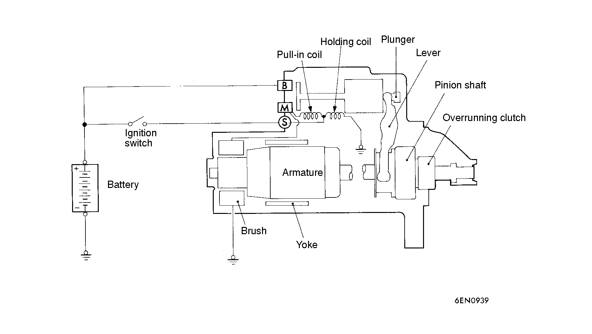

![[Previous]](https://mitsubishitechinfo.com/data/F24S/BUTTONS/fprevg.png)
![[Next]](https://mitsubishitechinfo.com/data/F24S/BUTTONS/fnextg.png)

Items
Specification
Type
Direct drive type
Identification No.
0 001 107 032
Part No.
M04672108
Rated output kW/V
0.95/12
No. of pinion teeth
8
OPERATION
•For models equipped with M/T, the clutch pedal position switch contact is switched OFF when the clutch pedal is depressed. When the ignition switch is then switched to the "START" position, electricity flows to the starter relay and the starter motor, the solenoid (magnetic switch) of the starter is switched ON, and the starter motor is activated.
NOTE
If the ignition switch is turned to the "START" position when the clutch pedal is not depressed, electricity flows to the starter relay (coil), the clutch pedal position switch, and to ground. This causes the starter relay contacts to remain open, preventing starter motor operation.
•For models equipped with A/T, when the ignition switch is turned to the "START" position with the selector lever in "P" or "N", the solenoid (magnetic switch) of the starter is switched ON and the starter motor is activated.